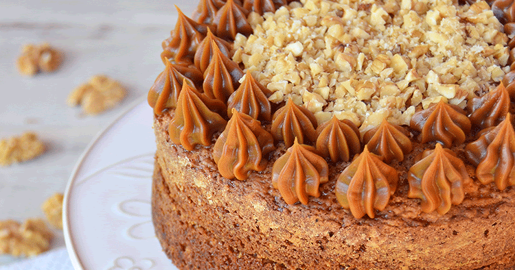
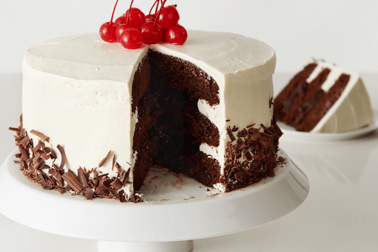
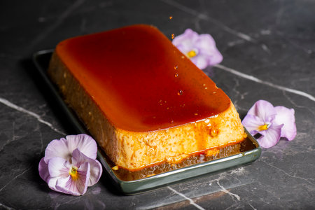

Nuestros Productos
|
Tortas y postres |
|
|
Torta de zanahoria con nueces
Sabores cálidos que evocan hogar y sofisticación. |
|
|
Torta arequipe y nueces
Un clásico reinventado con elegancia artesanal. |
 |
|
Torta de Limón con Merengue Suizo
Refrescante y delicada, como una caricia al paladar. |
|
|
Selva Negra
Una experiencia profunda, elegante y llena de contrastes. |
 |
|
Tiramisú Clásico
Un viaje de sabor entre capas suaves y aromas intensos. |
|
|
Flan de Caramelo Artesanal
Simple, elegante y absolutamente delicioso. |
 |


Regresar a la página principal
¿Quienes Somos?
Contactanos
Institución aliada
By Valeria Puello Mouthon